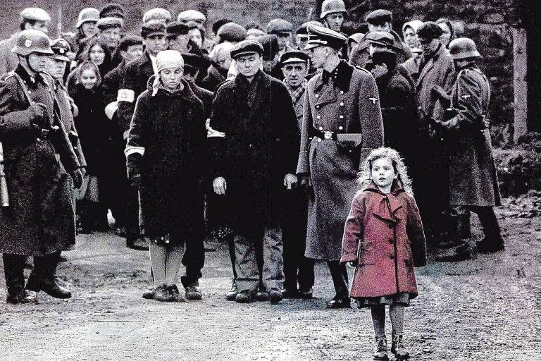

Interestelar
Gênero: ficção científica, drama
Em um futuro próximo, a Terra está se tornando inabitável devido a mudanças climáticas severas e a escassez de recursos naturais. Cooper (Matthew McConaughey), um ex-piloto da NASA e engenheiro, vive com sua filha Murphy (Mackenzie Foy) e seu filho Tom (Timothée Chalamet) em uma fazenda. Murphy acredita que há um fantasma em seu quarto, que tenta se comunicar com ela através de mensagens codificadas.
Cooper é recrutado por um grupo de cientistas liderados pela Dra. Brand (Anne Hathaway) para uma missão espacial crucial. Eles precisam encontrar um novo lar para a humanidade, viajando através de um buraco de minhoca perto de Saturno que leva a outra galáxia, onde três planetas potencialmente habitáveis foram identificados. A jornada é cheia de desafios, incluindo a relatividade do tempo, que afeta a percepção do tempo para os viajantes espaciais em comparação com aqueles que permanecem na Terra.
A Lista de Schindler
Gênero: drama
A inusitada história de Oskar Schindler (Liam Neeson), um sujeito oportunista, sedutor, "armador", simpático, comerciante no mercado negro, mas, acima de tudo, um homem que se relacionava muito bem com o regime nazista, tanto que era membro do próprio Partido Nazista (o que não o impediu de ser preso algumas vezes, mas sempre o libertavam rapidamente, em razão dos seus contatos). No entanto, apesar dos seus defeitos, ele amava o ser humano e assim fez o impossível, a ponto de perder a sua fortuna mas conseguir salvar mais de mil judeus dos campos de concentração.
Sempre ao Seu Lado
Gênero: drama
Parker Wilson (Richard Gere) é um professor universitário que, ao retornar do trabalho, encontra na estação de trem um filhote de cachorro da raça akita, conhecido por sua lealdade. Sem ter como deixá-lo na estação, Parker o leva para casa mesmo sabendo que Cate (Joan Allen), sua esposa, é contra a presença de um cachorro. Aos poucos Parker se afeiçoa ao filhote, que tem o nome Hachi escrito na coleira, em japonês. Cate cede e aceita sua permanência. Hachi cresce e passa a acompanhar Parker até a estação de trem, retornando ao local no horário em que o professor está de volta. Até que um acontecimento inesperado altera sua vida.
Viva - A Vida é uma Festa
Gênero: animação, aventura, comédia
Em Viva - A Vida é uma Festa, Miguel é um menino de 12 anos que quer muito ser um músico famoso, mas ele precisa lidar com sua família que desaprova seu sonho. Determinado a virar o jogo, ele acaba desencadeando uma série de eventos ligados a um mistério de 100 anos. A aventura, com inspiração no feriado mexicano do Dia dos Mortos, acaba gerando uma extraordinária reunião familiar.
Clube da Luta
Gênero: suspense, drama
Jack (Edward Norton) é um executivo jovem, trabalha como investigador de seguros, mora confortavelmente, mas ele está ficando cada vez mais insatisfeito com sua vida medíocre. Para piorar ele está enfrentando uma terrível crise de insônia, até que encontra uma cura inusitada para o sua falta de sono ao frequentar grupos de auto-ajuda. Nesses encontros ele passa a conviver com pessoas problemáticas como a viciada Marla Singer (Helena Bonham Carter) e a conhecer estranhos como Tyler Durden (Brad Pitt). Misterioso e cheio de ideias, Tyler apresenta para Jack um grupo secreto que se encontra para extravasar suas angústias e tensões através de violentos combates corporais.
Cidade de Deus
Gênero: drama
Dadinho (Douglas Silva) e Buscapé são grandes amigos, que cresceram juntos imersos em um universo de muita violência. Na Cidade de Deus, favela carioca conhecida por ser um dos locais mais violentos do Rio de Janeiro, os caminhos das duas crianças divergem, quando um se esforça para se tornar um fotógrafo e o outro o chefe do tráfico. Buscapé (Alexandre Rodrigues) é um jovem pobre, negro e muito sensível, que vive amedrontado com a possibilidade de se tornar um bandido, e acaba sendo salvo de seu destino por causa de seu talento como fotógrafo, o qual permite que siga carreira na profissão.
É através de seu olhar atrás da câmera que Buscapé analisa o dia-a-dia da favela onde vive, enquanto Dadinho, agora Zé Pequeno (Leandro Firmino), se torna o temido chefe do tráfico da região, continuando com o legado de violência que remonta a décadas anteriores - e parece ser infinita. Considerado um dos melhores filmes da história do cinema brasileiro.